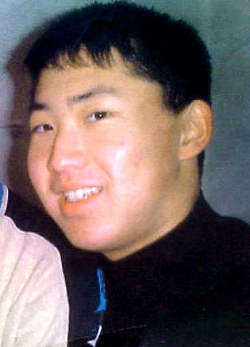
리즈시절의 김정은
이일규 참사의 증언과 나무위키 등
관련 자료를 참고 함
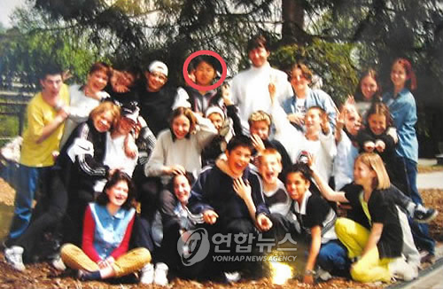
스위스 유학시절의 김정은
이 시절에도 스위스 주재 북대사 또한
김정은의 존재를 몰랐다고 함
군대 또한 신변 문제나 여러 문제가 있으니까
진짜 숨기고 입대했다고 함
김정일이 김정은을 강하게 키우기 위한
목적이라는듯
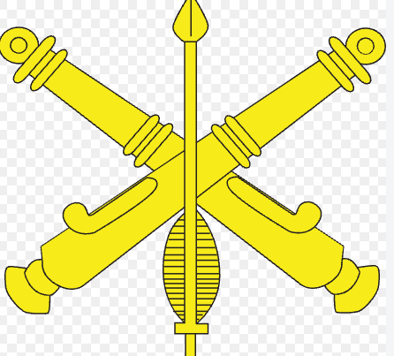
짤은 구글에서 가져온 포병중대 마크
2005년 김정은은 신분을 숨기고
포병중대 하급병사(이등병)으로 입대
2006년 김정은은 중급병사(상병)으로 진급
이 시기에 김정은을 괴롭히는 사람이 나타남
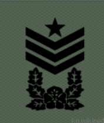
한국 원사마크
사관장은 한국의 원사급
사관장은 김정은의 정체를 몰랐고
부자집 도련님으로 생각을 했고
본격적으로 괴롭히기 시작
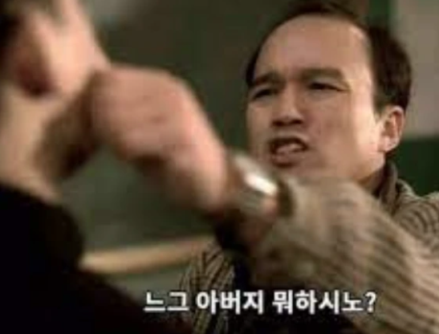
느그 아버지 뭐하시노와...고향을 물어보며
괴롭혔는데....
정은이는 부모님은 돌아가시고
외삼촌이 회사 사장을 한다고 구라를 쳤는데...
사관장은 호구 하나 왔구나 생각을 하면서
본격적으로 괴롭힘
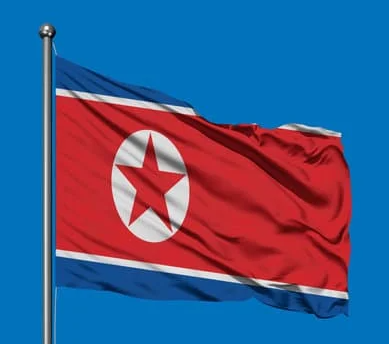
당시 북한군대의 필수코스는 도둑질
전시 상황에 도둑질로 자력갱생을 힌다는
말도 안되는 의마기 있음
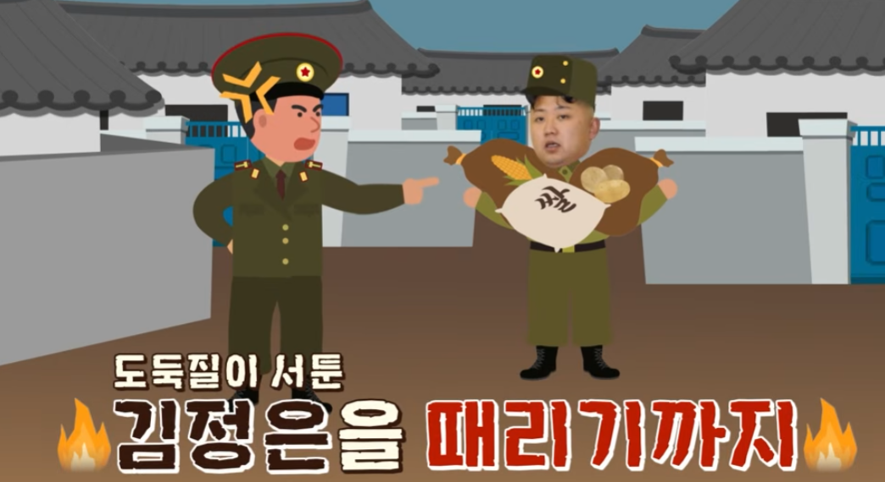
야전 훈련 목적으로
도둑질을 시키고 김정은을 때리기도 함
당시 정은이는 폐급이고
맞은 적도 많다는 증언이 있음
분대장 견장임
당시 포병중대 분대장은 김정은을
불쌍히 생각했고 잘 해줬다고 함
또 다시 시간이 흘러...
사관장은 김정은에게 외삼촌을 통해서
부대에 필요한 물건이 있으니 구해달라는
요청을 함
분대장과 함께 평양에 도착한
김정은
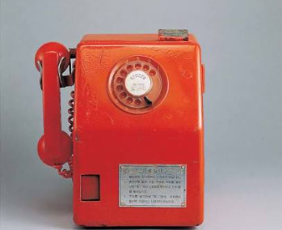
공중전화로 어딘가에 전화를 하는데...
10분 뒤...
216 번호판을 한 벤츠가 나타남
216은 북한의 고위급이 쓴다는 번호판임
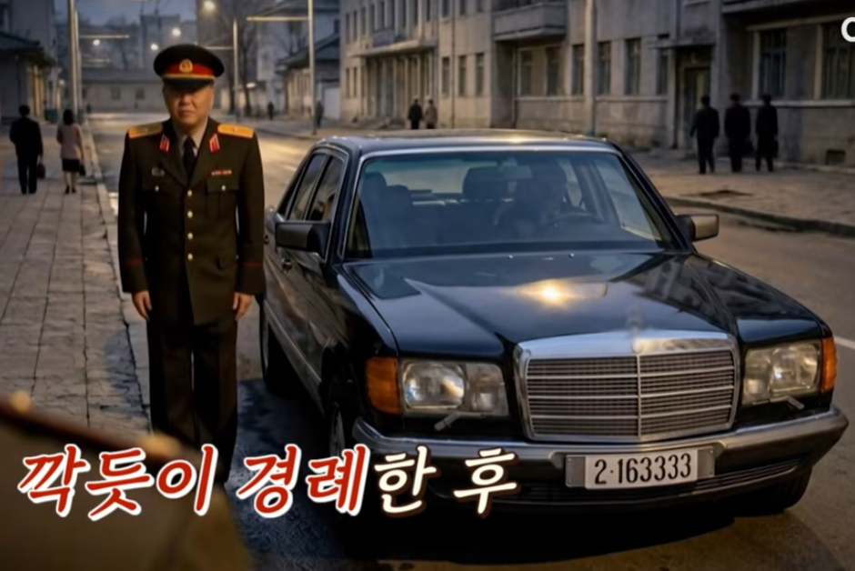
간부가 나타나더니 깍듯이 인사를 하며
김정은을 데려감
정은이는 분대장에게
그간 나를 돌봐주느라고 수고가 많았습니다.
오늘로 나의 군사복무 기간은 끝났습니다.
내가 지시해놓을 테니
평양에 체류하는 동안 좋은 시간 보내십시오.
훗날 제가 분대장 동지를 꼭 찾겠습니다
라는 말을 하며 떠남
당시 분대장은 당황했다는 이야기...
또 다시 시간이 자나...
부대에 김정은이 있다는 사실을 다 알게 됨
사관장은 이 사실을 알고 자살을 했다고 함
당시 A 중대장, B 부중대장, 분대장이
잘해줬다는 이야기가 있었음
A 중대장은 김정은의 추천으로
2007년 김일성종합대학 포병 고위지휘반
입학 2010년 학위 받음
2012년 대좌 진급
엄청난 초고속 승진임
B 부중대장은 제대를 하고 중앙간부 학교 입학
2013년 당위원장이 되었고 승승장구 중
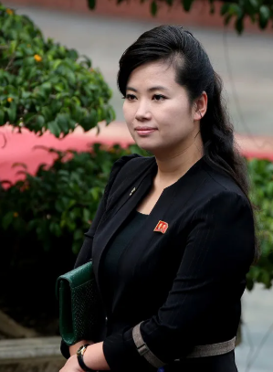
가장 놀라운건 분대장인데
현송월과 결혼을 함
이것도 김정은이 연결시켰줬다는 이야기가 있음
김정은에게 평양에 있는 대학에 입학하고 싶다는
이야기를 농담으로 했는데
김일성 종합대학에 진짜로 입학 시켜줌
이후 김정은과 가끔 몰래 만났다는 이야기도 있고..
국방위원회에 배치되어 김정은의 지근거리에서
근무 중이라고...
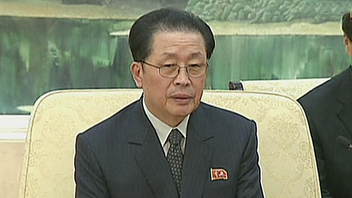
김정은이 군생활 중간에 복귀한 이유로
추측이 여러가지 나왔는데...
김정일과 장성택이 포병부대를 시찰했는데
아는 체를 했고 어쩔수 없이 복귀시켰다고 함
우상화를 위해 거짓말을 한 거라는
탈북자들의 증언도 있고 재미로 보면 될듯

만약 사관장 자살안했으면 어케됨? 고사포로 다진고기 되었으려나